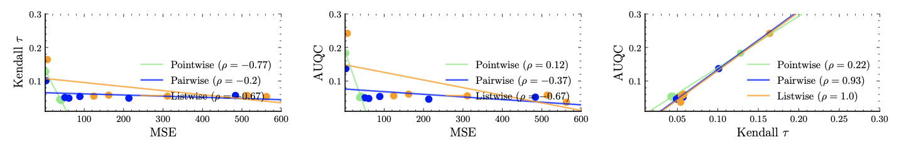

- AUQC は NDCG の一種割引を \(n-i+1\) とした NDCG は AUQC と一致する。そのため LambdaMART 型の目的関数で AUQC を直接最適化できる。
- 30通り中16通り6種類のメタ学習器と5つのデータの組み合わせのうち、リストワイズが最も高い AUQC を示した数。ポイントワイズとペアワイズは7通りずつ。
- ペアは1人につき1組比較するペアを1人あたり \(k\) 組だけ抜き出し、計算量を \(O(n^2)\) から \(O(kn)\) に下げる。\(k=1\) で良い結果が得られたと報告されている。
効果を正確に推定できても、並び順を間違えれば処置の割り当ては悪くなる
マーケティングのクーポン、ワクチンの配分、設備の予防保守など、処置できる数に上限がある問題は多い。よく使われるのは、まず各人の処置効果を推定し（予測）、その推定値を最適化問題に入れて誰を処置するか決める（最適化）という2段階の方法である。論文はこれを予測重視の学習と呼ぶ。
効果の大きい人から処置する問題では、推定値の正確さより並び順の正しさが結果を左右する。下の表は論文の例で、モデル1は推定値が真の値に近いが順位が崩れている。モデル2は値が大きくずれているが、順位は真の順位と一致する。人数が限られるときに先に処置すべき人を正しく選べるのはモデル2である。論文は最適化の結果に合わせて予測モデルを作る意思決定重視の学習の立場から、効果を推定する代わりに効果の順位を直接学ぶことを提案する。
| 1 | 2 | 3 | 4 | 5 | 6 | MSE | 順位 | |
|---|---|---|---|---|---|---|---|---|
| 真の処置効果 | 0.20 | 0.17 | 0.16 | 0.15 | 0.11 | 0.10 | — | — |
| モデル1（効果の推定） | 0.221位 | 0.154位 | 0.163位 | 0.172位 | 0.106位 | 0.115位 | 良い | 悪い |
| モデル2（効果の順位） | 0.251位 | 0.222位 | 0.203位 | 0.154位 | 0.105位 | 0.056位 | 悪い | 良い |
表1 6人の顧客（列）の真の処置効果と、2つのモデルの推定値。推定値の下の順位は推定値の大きい順に並べたときのもので、橙色は真の順位と食い違う人（論文 Table 2 の数値から解説者が作表。順位は解説者が付記）。
処置できる人数が事前に分からないなら、効果の大きい順に並べるのが最適で、その良さは AUQC で測れる
各人 \(i\) は特徴量 \(x_i\)、二値の処置 \(t_i \in \{0,1\}\)、成果 \(y_i\) で表され、処置効果は \(\tau_i = Y_i(1) - Y_i(0)\) である。テスト時の \(n\) 人のうち最大 \(B\) 人まで処置できるとき、解くべき問題は次のようになる。
論文は、正確な予算 \(B\) は分からず、\(B \sim \mathcal{U}(1, n)\) と一様に分布すると仮定する。\(B=1\) なら効果が最大の1人を処置するのが最適であり、予算が一様に分からないなら、全員を \(\tau_i\) の大きい順に並べて上から処置するのが最適になる。この方策の評価には上位 \(k\) 人を処置したときの累積効果を描いた Qini 曲線の下の面積（AUQC）を使う。
ここで \(\tau_{\pi_i}\) は順位 \(i\) の人の効果である。過去のデータはランダム化比較試験から得たものと仮定している。
AUQC は線形の割引をもつ NDCG の一種なので、リストワイズの目的関数で直接最適化できる
論文は3種類の目的関数を比べる。ポイントワイズは各人の目標値を平均二乗誤差（MSE）で当てにいく従来の方法で、推定値から生じる並び順は考えない。ペアワイズは RankNet にならい、2人のどちらが上位かを2値分類として学ぶ。リストワイズは LambdaMART にならい、ペアの損失に「その2人を入れ替えたときの NDCG の変化 \(\Delta\mathrm{NDCG}_{i,j}\)」を重みとしてかける。
鍵になるのは、AUQC を順位ごとに足し直すと NDCG の形になることである。
利得を \(g_{\pi_i} = \tau_{\pi_i}\)、割引を \(d(i) = n-i+1\) とした NDCG がこれに一致する。リストワイズの目的関数は NDCG を最適化することが示されているので、AUQC も直接最適化できる、というのが論文の主張である。ただしこれは、モデルが処置効果 \(\tau\) そのものを予測する場合の話で、\(\tau\) は観測できないため、次節のメタ学習器が必要になる。
ペアを全部使うと計算量は \(O(n^2)\) になり、マーケティングのような大規模データには合わない。そこで1人あたり \(k\) 組のペアを一様に抜き出して勾配を確率的に見積もり、計算量を \(O(kn)\) に抑える。論文は \(k=1\)、つまりポイントワイズと同じ計算量で良い結果が得られたと報告している。
6種類のメタ学習器の学習に、順位を学ぶ目的関数を組み込む
メタ学習器は任意の機械学習モデルで処置効果を推定するための枠組みである。論文は各メタ学習器の学習で、ポイントワイズの目的関数（回帰や分類）の代わりにペアワイズまたはリストワイズの目的関数を使う。
- Z-Learner：傾向スコアで変換した成果 \(z\)（処置群は \(y/\hat{e}\)、対照群は \(-y/(1-\hat{e})\)）を目標にした最終モデルを、順位の目的関数で学習する。
- S-Learner：処置を特徴量に含めた1つのモデルを順位の目的関数で学習し、処置ありとなしのスコアの差を効果の代わりに使う。
- T-Learner：処置群と対照群で別々のモデルを順位の目的関数で学習し、スコアの差を使う。
- X-Learner：T-Learner で補完した効果を目標にする2つの最終モデルを順位の目的関数で学習し、傾向スコアで重みづけて足し合わせる。最初の段のモデルはポイントワイズのまま。
- DR-Learner：T-Learner と傾向スコアから作る二重頑健な擬似成果 \(\phi\) を目標に、最終モデルを学習する。
- R-Learner：R-Loss（重みつき MSE）と同じ重みとラベルを使った、重みつきのペアワイズ・リストワイズ目的関数で学習する。
S-Learner と T-Learner は効果 \(\tau\) を直接目標にしないので、前節の理論は当てはまらない。順位づけのスコアは較正されていないため、スコアの差が効果の順位を保つ保証もない。論文はそれでも「よい経験則になりうる」としている。
30通りの比較のうち16通りでリストワイズが最も高い AUQC を示したが、最良の目的関数はメタ学習器によって違う
データはいずれもランダム化試験のもので、合成データ（10,000人、特徴量10個）、Criteo（500,000件を抽出）、Hillstrom（女性向け・男性向けメールを別々の二値データとして扱う）、グローバルなオンライン旅行代理店の販促キャンペーンの非公開データ（Promotion）の5つを使う。モデルはすべて LightGBM で、ペアワイズとリストワイズはカスタム目的関数として実装した。5分割交差検証を行い、ハイパーパラメータは10回のランダム探索で調整した。
6種類のメタ学習器 × 5データの30通りのうち、最も高い AUQC を示したのはリストワイズが16通り、ポイントワイズとペアワイズが7通りずつだった。リストワイズが有利に見えるのは Z・X・R-Learner で、S-Learner ではペアワイズ、DR-Learner ではポイントワイズが良かった。Promotion データでのみ、ポイントワイズが比較的良い結果を示した。論文はメタ学習器の選び方も目的関数の選び方と同じくらい重要だと述べている。
| メタ学習器 | Synthetic | Criteo | Hillstrom 女性向け | Hillstrom 男性向け | Promotion* |
|---|---|---|---|---|---|
| Z | 0.183 / 0.137 / 0.242 | 0.038 / −0.014 / 0.048 | 0.057 / 0.016 / 0.092 | 0.013 / 0.022 / 0.027 | 0.407 / 0.370 / 0.593 |
| S | 0.051 / 0.052 / 0.037 | 0.030 / 0.002 / 0.048 | 0.011 / 0.042 / 0.039 | 0.025 / −0.021 / 0.021 | 0.370 / 0.593 / 0.222 |
| T | 0.054 / 0.046 / 0.058 | 0.043 / −0.015 / 0.039 | −0.004 / 0.044 / 0.021 | 0.015 / −0.017 / 0.032 | 0.333 / 0.630 / 0.556 |
| X | 0.052 / 0.054 / 0.061 | 0.034 / 0.002 / 0.036 | −0.000 / 0.028 / 0.033 | −0.028 / 0.029 / 0.018 | 1.000 / 0.704 / 0.852 |
| DR | 0.055 / 0.048 / 0.056 | 0.044 / 0.022 / 0.039 | −0.101 / 0.027 / 0.005 | 0.043 / 0.006 / 0.039 | 0.667 / −0.481 / −0.148 |
| R | 0.054 / 0.050 / 0.056 | 0.029 / 0.021 / 0.038 | −0.034 / 0.036 / 0.048 | 0.033 / 0.012 / 0.034 | 0.593 / −0.296 / −0.259 |
表2 各セルは AUQC を「ポイントワイズ / ペアワイズ / リストワイズ」の順に並べ、最も高い値を太字にした。セルの左の線は最良の目的関数を表す（橙＝ポイントワイズ、淡い青＝ペアワイズ、濃い青＝リストワイズ）。*Promotion は機密保持のため、最良の値が 1 になるよう尺度を変えた値。標準誤差は省略した（論文 Table 4 の数値から解説者が作表）。
本文によると、リストワイズがポイントワイズを上回ったのは30通り中20通りである（Table 4 の値から解説者が数えると21通り）。最良の回数（16・7・7）は Table 4 と一致する。
合成データでは MSE の小ささは AUQC の高さにつながらず、Kendall τ は AUQC とよく連動した
真の効果が分かる合成データで、3つの指標を比べた。順位の目的関数は MSE がずっと悪い。たとえば Z-Learner の MSE はポイントワイズ 2.474、リストワイズ 6.465、S-Learner ではそれぞれ 37.916 と 562.509 である。それでも Z-Learner の AUQC はポイントワイズ 0.183 に対しリストワイズ 0.242 と高い（論文 Table 5）。論文は、順位づけのスコアが効果の大きさを正確には表していないと述べている。
MSE は AUQC の良い予測指標ではなかった。一方、2人ずつの順位の一致度を測る Kendall τ は、どのモデルでも AUQC と正の相関があり（\(\rho > 0\)）、順位の目的関数で学んだモデルでは特に強かった（\(\rho > 0.9\)）。論文はここから、処置の優先順位づけでは点ごとの誤差を最適化する意味は薄く、順位の指標で評価すべきだと述べている。

論文はハイパーパラメータの感度も調べている。実験で使った既定の設定（\(k=1\)、\(\sigma=1\)、スコアをシグモイドで \([0,1]\) に正規化）は、目的関数とメタ学習器をまたいでおおむね良かった。正規化した場合は、抜き出すペアを増やしても性能はほとんど上がらなかった。正規化しない場合は、本文によると S・T-Learner で性能が上がり、付録ではより多くのメタ学習器で性能が上がっている。論文は、ペアの抽出による確率的なゆらぎが一種の正則化として働く可能性にも触れている。
処置できる人数の上限のもとで、効果 τ の順位を直接学ぶ
- 最適化するもの：処置効果 \(\tau\) の並び順の良さ（AUQC）。予算 \(B\) のもとで効果の合計を最大にする問題を、\(B\) は分からず \(1\) から \(n\) の一様分布に従うという仮定によって「\(\tau\) の大きい順に並べる」問題に置き換えている。
- 予算の数え方：制約は \(\sum_i t_i \le B\)、つまり処置できる人数の上限である。1人ごとに処置コストが違うことは制約に入っていない。
- コストの仮定：コストは成果 \(Y\) の中に差し引く形で入る。合成データでは処置コストを売上の10%（\(C = 0.1R\)）とし、処置して購入した人の成果を \(r-c\)、処置して購入しなかった人の成果を \(-c\) と定義している。Criteo は「コンバージョン − 訪問」、Hillstrom は「売上 − 訪問」を純収益として使う。
- 処置：二値。Hillstrom の2種類のメールは、対照群を共有する2つの二値データに分けて扱う。複数の処置や連続的な処置は今後の課題とされている。
- データ：ランダム化比較試験のデータを仮定し、傾向スコアは処置群の割合で見積もる。交絡のある観察データでの性能は今後の課題とされている。
解説者の研究（2023）のように、購入したときだけ固定額のコストがかかり、予算が金額で決まる設定では、\(\rho = \mathbb{E}[S(1)-S(0)] / (C\,\mathbb{E}[Y(1)])\)、つまり増分の成果を処置したときの期待コストで割った比で並べるのが、緩和したナップサック問題の貪欲解になる。この論文が学ぶのは人数制約のもとでの \(\tau\) の順位なので、そのまま \(\rho\) の順位を学ぶことにはならない。論文は増分の投資収益率のようなより複雑な目的や、より高度な運用上の制約への拡張を今後の課題に挙げている。順位の目的関数を \(\rho\) のような比に当てはめたときの性能は、この論文では検証されていない。
@misc{vanderschueren2024metalearners,
title = {Metalearners for Ranking Treatment Effects},
author = {Vanderschueren, Toon and Verbeke, Wouter and Moraes, Felipe and Proen{\c{c}}a, Hugo Manuel},
year = {2024},
eprint = {2405.02183},
archivePrefix = {arXiv},
primaryClass = {cs.LG},
doi = {10.48550/arXiv.2405.02183},
url = {https://arxiv.org/abs/2405.02183}
}